STM32手把手做一套独居老人居家监护系统：60G毫米波雷达测呼吸心率+摔倒报警+OneNet云平台远程查看（附完整源码）
这篇文章带大家从零做一套独居老人居家监护系统。主控用最常见的 STM32F103C8T6，搭配一颗 60GHz 毫米波生命体征雷达，不用老人佩戴任何设备，就能非接触地测出呼吸频率、心率，判断房间里有没有人、有没有摔倒；再配合红外测温、温湿度、一氧化碳传感器，把家里的环境和老人的身体状况一起监测起来。数据通过 ESP8266 走 WiFi 上传到中国移动 OneNet 云平台，子女在手机上打开一个网页就能远程查看，一旦心率过快、体温过高、煤气浓度超标或者检测到摔倒，本地蜂鸣器立刻报警。
整篇文章按"先看效果 → 讲原理 → 列材料 → 接线 → 讲协议 → 逐段讲代码 → 上云 → 调试"的顺序写，0 基础的同学照着做也能复刻出来。

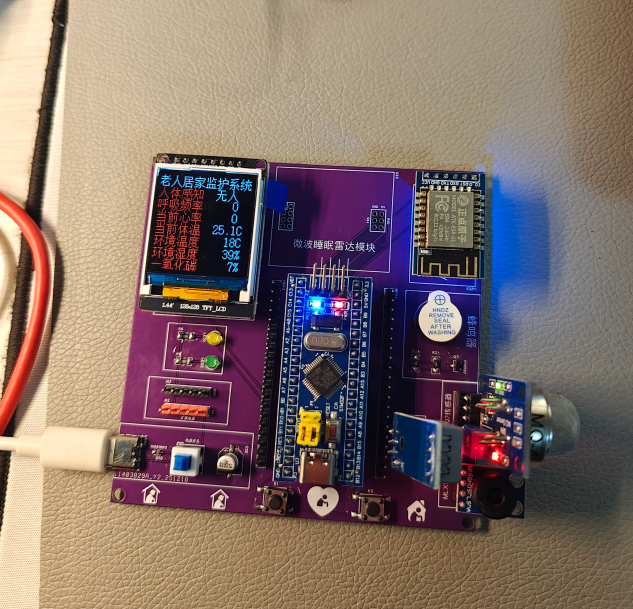
目录
• 一、先看效果：这套系统能干啥 • 二、项目背景与功能需求 • 三、系统总体方案设计 • 四、硬件选型与材料清单 • 五、硬件连接：一张表接完所有线 • 六、OneNet云平台部署（手把手） • 七、软件整体框架与串口成帧原理 • 八、60G毫米波雷达通信协议详解（本文重点） • 九、核心驱动代码逐段讲解 • 十、主程序工作流程与报警逻辑 • 十一、调试注意事项与常见问题FAQ • 十二、应用场景、扩展方向与工程获取
一、先看效果：这套系统能干啥
上电之后，1.44 寸 TFT 彩屏会分 8 行实时显示监测数据，从上到下分别是：人体存在状态、呼吸频率、当前心率、人体体温、室内温度、室内湿度、一氧化碳浓度。

系统具体实现了下面这些功能：
1. 非接触呼吸、心率检测：60GHz 毫米波雷达对着老人胸口方向，老人坐着或躺着不动，雷达每隔 3 秒上报一次呼吸频率（0 25 次/分）和心率（0100 次/分），全程不需要佩戴手环、胸带。2. 人体存在检测：雷达能判断监测区域内"有人"还是"无人"，有人就刷新数据，长时间无人可以判定老人离开房间。 3. 摔倒检测报警：一方面雷达会上报运动、姿态、在床离床状态；另一方面程序对心率和呼吸的连续数据做滑动窗口方差分析，生理指标突然剧烈波动时判定为疑似摔倒，蜂鸣器报警。 4. 人体体温测量：MLX90614 红外测温传感器非接触测额头或手腕温度，超过 38℃ 报警。 5. 室内温湿度测量：DHT11 检测室内温度和湿度。 6. 一氧化碳浓度检测：MQ7 传感器检测煤气/一氧化碳浓度，超过阈值报警，防煤气中毒。 7. 本地超限报警：心率 > 110、体温 > 38℃、一氧化碳 > 80%、检测到摔倒，任意一条满足，有源蜂鸣器立刻鸣响。 8. 数据上云：ESP8266 把 8 项数据通过 MQTT 协议上传 OneNet 平台，用平台的可视化工具拖拽生成一个网页，手机、电脑都能远程看。
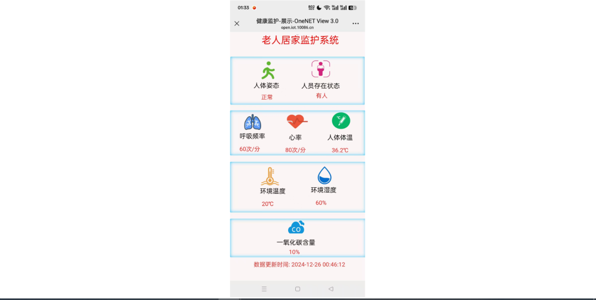
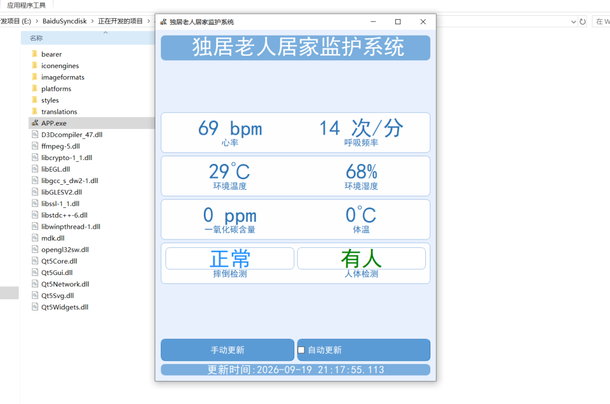
串口调试助手还能打印出每一项数据和雷达原始上报帧，方便大家调试时对照。
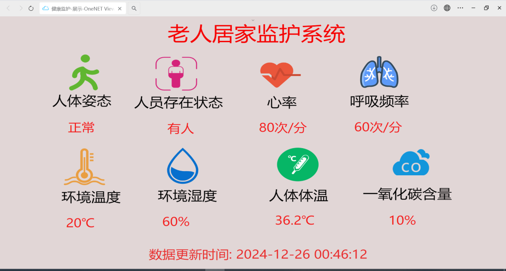
二、项目背景与功能需求
2.1 为什么要做这个项目
随着老龄化程度加深，独居老人的安全监护成了很多家庭的现实难题。子女不在身边，老人突发心脏病、摔倒、煤气泄漏，往往不能第一时间被发现。传统的可穿戴设备（手环、紧急按钮）需要老人主动佩戴、主动操作，老人忘记戴、不会用、摔倒后够不到按钮，设备就形同虚设。
毫米波雷达技术的成熟给了另一条思路：把监测设备装在房间里，老人什么都不用戴、什么都不用按，雷达靠感知人体呼吸和心跳引起的体表微动，就能非接触地判断生命体征和存在状态。这套系统就是把这种方案做成一个可以复刻的教学项目。
2.2 功能需求
本项目的设计需求整理如下：
1. 检测呼吸、心率等生理指标（采用 60GHz 频段毫米波雷达实现）； 2. 检测老人姿态，判断是否摔倒（采用 60GHz 频段毫米波雷达实现）； 3. 将数据通过 WiFi 上传到 OneNet 物联云平台，利用 OneNet 可视化 Web 框架设计网页，远程显示各传感器数据； 4. 检测到生理指标超过阈值时，系统发出报警提醒； 5. 本地 LCD 显示屏显示各传感器数据； 6. 检测老人的体温； 7. 检测室内环境温度、湿度、一氧化碳浓度。
上传到 OneNet 平台的数据属性（物模型标识符）定义如下，后面写代码和建产品时要严格对应：
三、系统总体方案设计
系统按功能可以划分为"感知层—主控层—传输层—应用层"四个部分。
感知层负责采集各类原始数据：
• 60GHz 毫米波雷达 R60ABD1：输出呼吸频率、心率、人体存在、运动/静止、在床/离床等信息，通过串口（UART）上报； • MLX90614 红外测温传感器：通过软件模拟 IIC 输出人体体温； • DHT11 温湿度传感器：单总线协议输出室内温度、湿度； • MQ7 一氧化碳传感器：模拟电压输出，接 STM32 的 ADC 通道采集； • 独立按键：用于解除报警、模拟摔倒测试。
主控层以 STM32F103C8T6 为核心，负责接收雷达串口数据并解析协议帧、定时读取各传感器、刷新 TFT 彩屏、判断报警条件、组帧上传数据。
传输层由 ATK-ESP8266 WiFi 模块承担，STM32 通过 AT 指令让模块连上家里路由器，再以 TCP 透传方式和 OneNet 平台的 MQTT 服务器（183.230.40.96:1883）建立连接，上报 JSON 格式的数据点。
应用层是中国移动 OneNet 物联网平台，设备数据上报后存到物模型数据流里，用平台的"可视化 View"工具拖拽仪表盘、数字卡片，发布成一个网页链接，子女手机浏览器打开即可远程查看。
系统整体结构如图5所示。
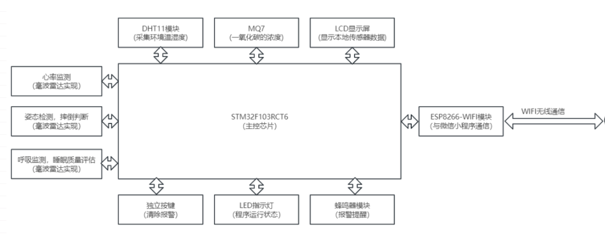
整机工作流程可以概括为：上电初始化各外设 → ESP8266 连路由器 → MQTT 连接 OneNet 并订阅主题 → 进入主循环，每 2 秒采集一次传感器数据、刷新屏幕、判断报警、组 JSON 上报；雷达数据由串口中断异步接收，主循环检测到成帧标志后解析。
四、硬件选型与材料清单
4.1 核心元器件选型
各模块的选型依据和用途如下表：
4.2 主控芯片 STM32F103C8T6
选用 STM32F103C8T6 作为主控。这颗芯片是 Cortex-M3 内核，主频 72MHz，64KB Flash、20KB SRAM，拥有 3 个 USART、2 个 SPI、2 个 IIC、多路 ADC、多个通用定时器。本项目需要 3 个串口（串口1调试打印、串口2接ESP8266、串口3接雷达）、1 路 ADC（MQ7）、若干 GPIO（屏幕、按键、蜂鸣器、LED），F103C8T6 的资源完全够用，而且价格便宜、资料最多，适合教学和复刻。
立创商城参考链接：https://item.szlcsc.com/24005615.html
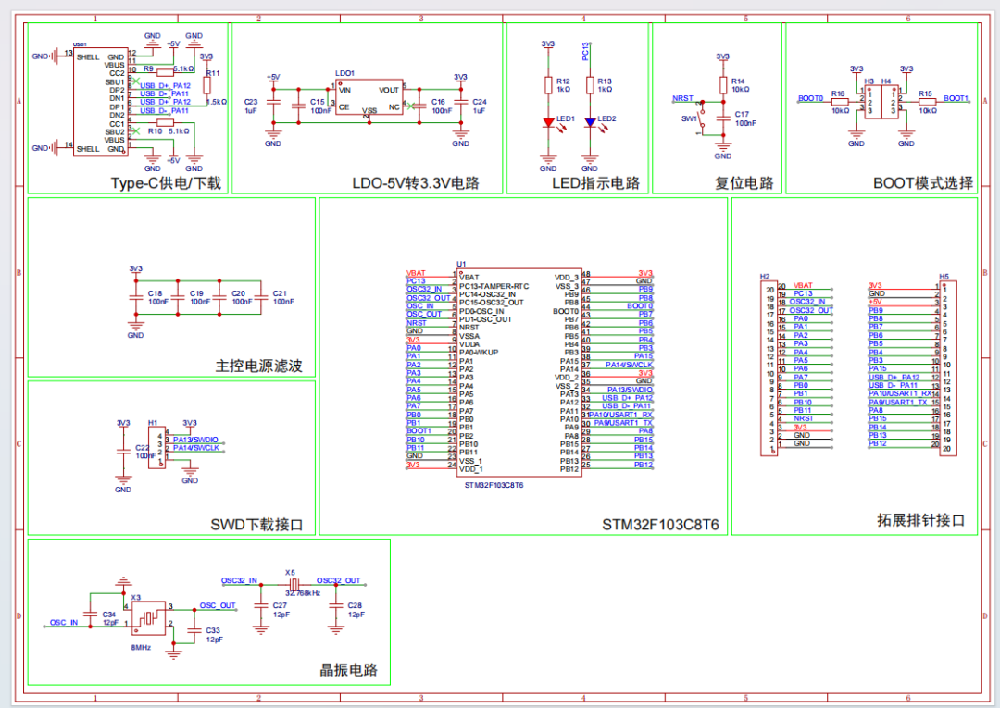
4.3 ST-Link下载器
程序通过 ST-Link 经 SWD 接口下载。代码里把 JTAG 关闭、只保留 SWD，就是为了把 PB3、PB4 这些被 JTAG 占用的引脚释放出来当普通 IO 用。
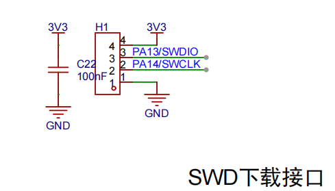
4.4 PCB焊接材料清单
如果大家自己画 PCB 打板焊接，下面这些分立元件需要备齐（材料和购买链接整理如下）：
说明：蜂鸣器属于感性负载，直接用 STM32 引脚驱动电流不够，也容易反向击穿 IO，所以用 SS8050 NPN 三极管做开关驱动，并在蜂鸣器两端反并一只 1N5819 续流二极管吸收关断瞬间的反向电动势。
4.5 60GHz毫米波雷达 R60ABD1
这是本项目最核心、也是最有特色的一个模块。R60ABD1 是海凌科推出的 60GHz 毫米波生物感知雷达，内置信号处理算法，直接通过串口输出呼吸频率、心率、人体存在、运动状态、睡眠状态等结果，开发者不需要自己做雷达信号处理，当成一个"串口传感器"用就行。
模块主要特性：
• 工作频段 60GHz，非接触、不需要佩戴任何设备； • 可检测人体存在、呼吸频率、心率、运动/静止、在床/离床、睡眠状态； • 呼吸频率检测范围约 0 25 次/分，心率约 0100 次/分，约每 3 秒上报一帧；• 串口 TTL 电平，默认波特率 115200，3.3V/5V 供电均可（本工程接 5V）； • 不受光线、温度、烟雾、衣物遮挡影响，隐私性好（不采集图像）。
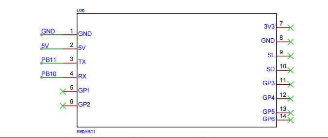
雷达的串口协议在第八章详细讲，这里先记住：它和 STM32 的串口3（PB10/PB11）相连。
五、硬件连接：一张表接完所有线
整个系统的接线如下表，大家照着接就能复刻。注意 ESP8266、雷达、MQ7、MLX90614 都用 5V 供电，TFT 屏用 3.3V。
5.1 完整接线表
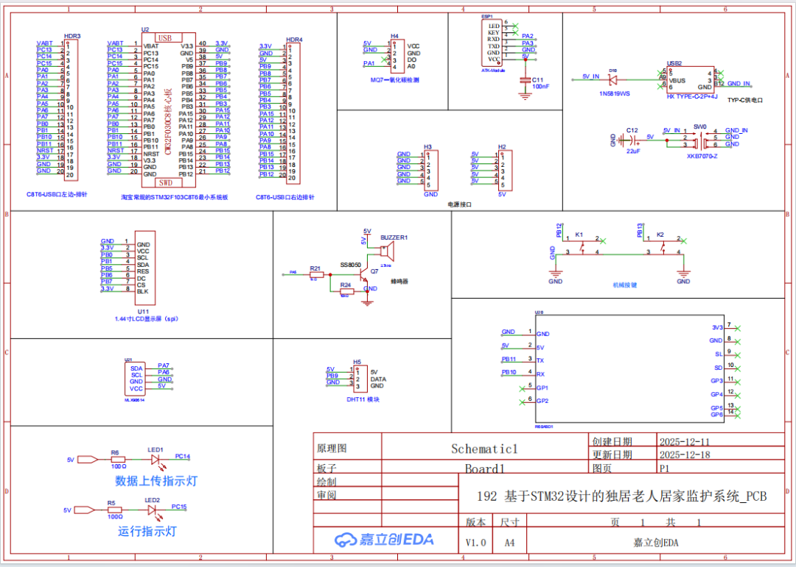
5.2 串口分配（重点理解）
这个项目用了 STM32 的三个串口，分工明确，大家接线时千万别接反 TX/RX：
• 串口1（PA9/PA10）：只做调试打印，接 USB转TTL 到电脑，用串口助手看 printf 日志； • 串口2（PA2/PA3）：接 ESP8266，收发 AT 指令和 MQTT 数据； • 串口3（PB10/PB11）：接 60G 雷达，接收雷达上报的呼吸心率数据帧。
记住一条铁律：单片机的 TX 接模块的 RX，单片机的 RX 接模块的 TX，交叉连接。
5.3 供电的几个坑
1. ESP8266 必须接 5V，而且电源要够劲。WiFi 发射瞬间峰值电流能到 300mA 以上，如果接 3.3V 或者用电脑 USB 口带不动，会出现"AT 能响应、一连路由器就重启"的怪现象。 2. 雷达建议接 5V，接线短一些，远离 ESP8266 天线，减少射频干扰。 3. MQ7 是加热型半导体传感器，内部有加热丝，上电后需要预热一段时间（约 20 秒到几分钟）读数才稳定，代码里开机先采一个基准值 MQ7_base做零点补偿，就是这个原因。4. 蜂鸣器、LED 等感性/大电流负载不要直接挂在给传感器供电的同一条线上，避免拉低电压导致传感器复位。
六、OneNet云平台部署（手把手）
数据上云用的是中国移动 OneNet 平台的 MQTT 协议。这一章一步步教大家把产品建好、把设备连上、把可视化网页做出来。
6.1 平台与账号
打开 OneNet 官网：https://open.iot.10086.cn/ ，注册并登录账号。本工程使用的是 OneNet 的**多协议接入（MQTT）**产品，旧版叫"MQTT 物联网套件"，数据点用物模型（dp）方式上报。
本工程对应的产品和设备关键信息如下（大家自己做的时候要换成自己产品的参数）：
产品ID：8w7dxp3Pj8
设备名称：dev1
设备密钥：（在平台创建设备后由平台生成）
AccessKey：（账号级，用于生成MQTT鉴权Token）
MQTT服务器IP：183.230.40.96
端口：1883
clientId：dev1
username：8w7dxp3Pj8（即产品ID）6.2 创建产品和设备
1. 登录后进入"多协议接入"→"MQTT"，点击创建产品，填写产品名称、行业类别，联网方式选 WiFi，设备接入协议选 MQTT。 2. 产品创建后会得到一个产品 ID（本例为 8w7dxp3Pj8）。3. 在产品下"添加设备"，设备名称填 dev1，平台会生成设备密钥。4. 在产品的"物模型/功能定义"里，按第二章的表添加 8 个数据流/属性标识符： HeartRate、DHT11_T、DHT11_H、MLX90614、MQ7、People、Fall、RespiratoryRate。标识符拼写必须和代码里 JSON 的 key 完全一致，否则平台收不到数据。
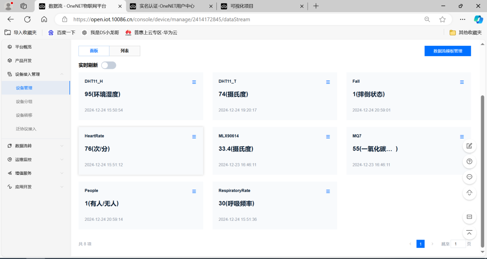
6.3 MQTT鉴权参数（Token怎么来）
OneNet 的 MQTT 登录需要一个用 AccessKey 通过 HMAC-SHA1 算出来的 password（Token）。本工程直接用算好的固定 Token：
IP地址：183.230.40.96
端口号：1883
clientId：dev1
username：8w7dxp3Pj8
password：version=2018-10-31&res=products%2F8w7dxp3Pj8&et=1839475731&method=sha1&sign=MzmQKCY61NfQXxe3xfrOaUDNRZw%3D订阅主题（接收平台下发）：
$sys/8w7dxp3Pj8/dev1/#发布主题（上报数据点）：
$sys/8w7dxp3Pj8/dev1/dp/post/json上报的 JSON 消息体格式如下（这就是代码里 sprintf 拼出来的内容）：
{
"id": 123,
"dp": {
"HeartRate": [{"v": 80}],
"DHT11_T": [{"v": 20}],
"DHT11_H": [{"v": 60}],
"MLX90614": [{"v": 36.2}],
"MQ7": [{"v": 10}],
"People": [{"v": 1}],
"Fall": [{"v": 0}],
"RespiratoryRate":[{"v": 18}]
}
}Token 的生成算法 OneNet 官方有文档，原理是把 res（资源，如 products/产品ID）、et（过期时间戳）、method=sha1 拼字符串，用 AccessKey 做 HMAC-SHA1 再 Base64。工程目录里附带了一个 Python 脚本 计算OneNet鉴权的Token.py，大家换成自己的产品 ID 和 AccessKey 运行就能算出自己的 password。注意 Token 里的 et 是过期时间，过期后要重新生成，本工程给的 et 时间戳是 2028 年，长期有效。
6.4 主题地址规则
OneNet MQTT 的主题格式是固定的：
• 上报数据点： $sys/{产品ID}/{设备名称}/dp/post/json• 订阅设备全部下行消息： $sys/{产品ID}/{设备名称}/#
把 {产品ID} 换成 8w7dxp3Pj8、{设备名称} 换成 dev1，就得到本工程用的两个主题。代码里用宏定义：
#define SET_TOPIC "$sys/8w7dxp3Pj8/dev1/#" //订阅
#define POST_TOPIC "$sys/8w7dxp3Pj8/dev1/dp/post/json" //发布6.5 用可视化View做远程监测网页
数据能上报后，进入 OneNet 的"可视化"工具（https://open.iot.10086.cn/studio/view/project ），新建一个项目，选择"试用专业版"，然后：
1. 从左侧拖入仪表盘、数字卡片、开关状态等组件； 2. 点组件"绑定数据流"，选择产品 8w7dxp3Pj8、设备dev1，绑定对应的数据点（如心率、体温）；3. 对需要换算或加文字的组件，写"过滤器"脚本提取数据。例如把温度加单位：
return [{
"value": "环境温度: " + data[0].value + "℃"
}]判断有人/无人这种 0/1 状态量，可以加判断：
if (data[0].value == 1) {
return [{ "value": "老人状态: 在房间" }]
} else {
return [{ "value": "老人状态: 无人" }]
}还能提取数据更新时间：
return [{
"value": "最新上报时间: " + data[0].update_at
}]4. 排版好之后点"发布"，平台会生成一个分享链接，手机和电脑浏览器都能打开。
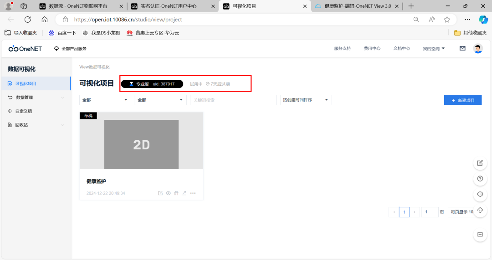
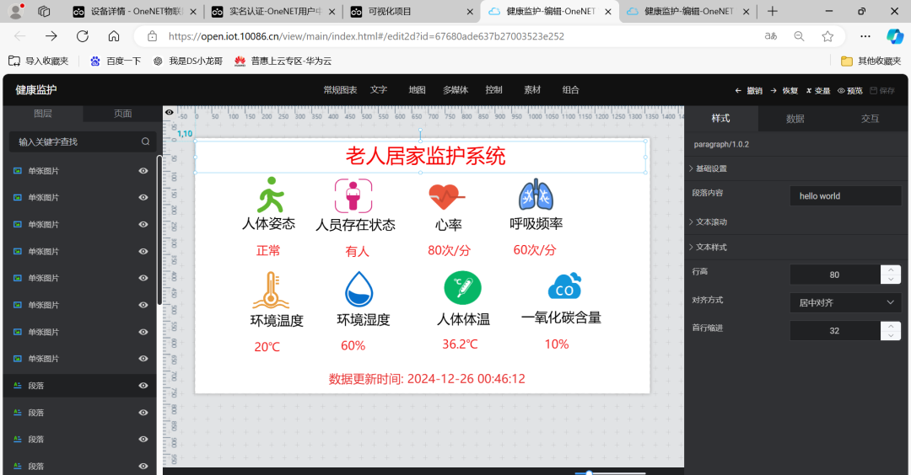
提示：可视化网页建议做成竖版、字号大一些，方便老人子女在手机上一眼看清。心率、体温这类关键指标可以用仪表盘+红色预警阈值，一氧化碳、摔倒状态用醒目的状态卡片。
七、软件整体框架与串口成帧原理
7.1 工程文件结构
STM32 工程按"寄存器风格"组织，每个外设一个 .c/.h，放在 SYSTEM 目录下，main.c 负责调用。文件结构如下：
STM32源码/
├── USER/main.c 主程序：初始化、主循环、雷达协议解析、报警逻辑
├── SYSTEM/
│ ├── SYS/ 系统配置、中断优先级分组
│ ├── USART/usart.c 串口1/2/3初始化 + 中断接收 + printf重定向
│ ├── TIMER/timer.c 定时器2/3初始化（串口空闲成帧）
│ ├── DELAY/delay.c 延时函数
│ ├── LED/led.c LED、蜂鸣器IO初始化
│ ├── KEY/key.c 独立按键扫描
│ ├── LCD/lcd.c 1.44寸TFT屏驱动（软件SPI）
│ ├── ADC/adc.c ADC采集（MQ7）
│ ├── DHT11/dht11.c DHT11温湿度单总线驱动
│ ├── MLX90614/MLX90614.c 红外测温软件IIC驱动
│ ├── ESP8266/esp8266.c ESP8266 AT指令驱动
│ └── MQTT/mqtt.c MQTT协议组帧（连接/订阅/发布）
├── FONT/font.c 屏幕显示用的汉字字库
└── PROJECT_MDK/ Keil5工程7.2 主程序整体流程
上电后 main 函数按顺序做这几件事：
1. 配置 SWD 下载模式（关闭 JTAG，释放 PB3/PB4）； 2. 初始化串口1（调试打印）、LED、蜂鸣器、按键、DHT11、TFT屏； 3. 初始化串口2（ESP8266）、定时器2（串口2空闲成帧）； 4. 初始化串口3（雷达）、定时器3（串口3空闲成帧）、ADC（MQ7）； 5. 初始化 MLX90614，扫描 IIC 总线、读芯片 ID 确认测温传感器在线； 6. 初始化 ESP8266，发 AT 测试，连上 WiFi 路由器； 7. 建立到 OneNet 的 TCP 连接，MQTT_Connect 登录，订阅主题； 8. 画好屏幕固定文字界面，蜂鸣器"滴"一声提示启动完成； 9. 采集 MQ7 基准值，初始化摔倒检测数组； 10. 进入 while(1) 主循环。
主循环里用 time_cnt 计数，每累计约 2 秒（time_cnt>100，每次循环 delay 10ms）执行一次"采集—显示—报警—上报"；雷达数据则是异步的，靠串口3中断接收，主循环检测到 USART3_RX_FLAG 成帧标志就去解析。
软件整体流程如图14所示。
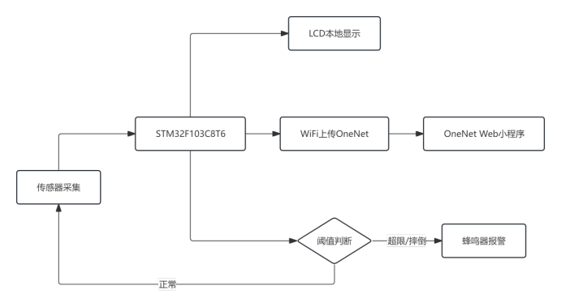
7.3 重点：串口"中断收字节 + 定时器空闲成帧"框架
这是本项目最值得学的一个编程套路。雷达和 ESP8266 都是串口设备，数据是一帧一帧来的，帧长度不固定。怎么判断"一帧数据收完了"？这里用了一个经典方法——空闲中断思想的定时器实现：
• 串口每收到 1 个字节，进接收中断，把字节存进缓冲区，同时把对应定时器的计数器清零并启动定时器； • 只要后续还有字节来，定时器就一直被清零，不会溢出； • 当一帧的最后一个字节收完、之后一段时间（本工程设 20ms）没有新字节，定时器就溢出进中断，在定时器中断里把"接收完成标志"置 1； • 主循环看到这个标志，就知道缓冲区里是一帧完整数据，可以解析了。
定时器配置 TIMER2_Init(72,20000)：72 是预分频（72MHz/72=1MHz 计数频率），20000 是自动重装值，计数 20000 次即 20ms 溢出。串口2 用 TIM2，串口3 用 TIM3，互不干扰。
先看串口3（雷达）的接收中断，每收一个字节就喂一下 TIM3：
//串口3接收中断服务函数（接雷达）
void USART3_IRQHandler(void)
{
u8 data;
if(USART3->SR & 1<<5) //接收寄存器非空
{
TIM3->CNT = 0; //清空定时器计数
TIM3->CR1 |= 1<<0; //启动定时器3
data = USART3->DR; //读取收到的字节
if(USART3_RX_FLAG == 0) //上一帧还没被处理完时不覆盖
{
if(USART3_RX_CNT < USART3_RX_LENGTH)
{
USART3_RX_BUFFER[USART3_RX_CNT++] = data; //存入缓冲区
}
else
{
USART3_RX_FLAG = 1; //缓冲区满，强制置标志
}
}
}
}再看 TIM3 的溢出中断，20ms 没新字节就置"成帧"标志：
void TIM3_IRQHandler(void)
{
if(TIM3->SR & 1<<0)
{
TIM3->SR &= ~(1<<0);
USART3_RX_FLAG = 1; //标记一帧接收完成
TIM3->CR1 &= ~(1<<0); //关闭定时器3，等下一帧再启动
}
}这套框架的好处是不阻塞、不丢帧、不用知道帧长，任何串口外设都能套用。串口2（ESP8266）用 TIM2 完全一样的机制。
八、60G毫米波雷达通信协议详解（本文重点）
雷达 R60ABD1 上电后会主动通过串口3上报数据帧，我们要做的就是按协议把帧解析出来。这一章把协议讲透。
8.1 帧格式
雷达每一帧都是定长 10 字节，格式如下：
代码里判断一帧是否合法，首先看前两个字节是不是 0x53、0x59：
if(USART3_RX_BUFFER[0]==0x53 && USART3_RX_BUFFER[1]==0x59)
{
switch(USART3_RX_BUFFER[2]) //按消息类型分发
{
...
}
}8.2 校验和怎么算
第8字节的校验和 = 前面第1~第7字节全部累加，取结果的低 8 位。以"开启心跳/生命体征检测"命令帧为例：
发送：53 59 85 00 00 01 01 3D 54 43
累加：0x53+0x59+0x85+0x00+0x00+0x01+0x01 = 0x13D
取低8位：0x3D ← 正好等于第8字节 0x3D关闭命令 53 59 85 00 00 01 00 3C 54 43，累加 0x53+0x59+0x85+0x01+0x00=0x13C，低 8 位 0x3C，也和第8字节对上。大家自己组命令帧发雷达时，校验和一定要算对，雷达收到校验错误的帧会直接丢弃。
8.3 本工程用到的上报消息
雷达会上报多种消息，代码里重点解析了下面几类（对照 main.c 的 switch 分支）：
（1）0x80 状态消息
• cmd=0x01人体存在信息：data 字节0x00=无人，0x01=有人；• cmd=0x02运动信息：data0x00=静止，0x01=运动，0x02=较剧烈运动。
case 0x80:
switch(USART3_RX_BUFFER[3])
{
case 0x01: //人体存在
switch(USART3_RX_BUFFER[6])
{
case 0x00: People=0; break; //无人
case 0x01: People=1; break; //有人
}
break;
case 0x02: ... break; //运动状态
}
break;（2）0x81 呼吸相关消息
• cmd=0x02呼吸频率：data 为呼吸频率值，范围 0~25，约 3 秒上报一次，直接赋给RespiratoryRate；• cmd=0x01呼吸状态（正常/异常等）。
case 0x81:
switch(USART3_RX_BUFFER[3])
{
case 0x02: //呼吸频率值
RespiratoryRate = USART3_RX_BUFFER[6]; //0~25 次/分
break;
}
break;（3）0x84 睡眠监测消息
• cmd=0x01在床/离床状态；• cmd=0x02睡眠状态：0x00=无人睡眠、0x01=浅睡、0x02=深睡。本工程主要监护客厅/卧室活动，这部分做了预留解析。
（4）0x85 心率/心跳消息（重点）
• cmd=0x02心率数值：data 为心率值，范围 0~100，约 3 秒上报一次，赋给HeartRate；同时用心率是否大于 40 来辅助判定有人/无人，并刷新"人体存在倒计时"；• cmd=0x05心跳参数异常提示。
case 0x85:
switch(USART3_RX_BUFFER[3])
{
case 0x02: //心率值
HeartRate = USART3_RX_BUFFER[6]; //0~100 次/分
if(HeartRate > 40) People = 1; //有心率=有人
else People = 0;
People_cnt = 10; //刷新存在倒计时
break;
case 0x05:
printf("---心率参数异常\r\n");
break;
}
break;8.4 怎么打开生命体征检测
雷达默认可能没有开启心率/呼吸上报，需要主动发命令开启。代码里封装了两个函数，通过串口3发送 10 字节命令帧：
//开启心跳(生命体征)检测功能
void EnableHeartbeatMonitor(void)
{
u8 enable_cmd[] = {0x53,0x59,0x85,0x00,0x00,0x01,0x01,0x3D,0x54,0x43};
for(int i = 0; i < sizeof(enable_cmd); i++)
{
USARTx_SendOneByte(USART3, enable_cmd[i]);
}
}
//不需要时关闭生命体征检测
void DisableHeartbeatMonitor(void)
{
u8 disable_cmd[] = {0x53,0x59,0x85,0x00,0x00,0x01,0x00,0x3C,0x54,0x43};
for(int i = 0; i < sizeof(disable_cmd); i++)
{
USARTx_SendOneByte(USART3, disable_cmd[i]);
}
}实际使用时，如果雷达出厂已默认开启心跳/呼吸上报，可以不用发这两条命令；如果上电后收不到 0x85/0x81 的数据帧，就在初始化阶段调用一次
EnableHeartbeatMonitor()。这也是调雷达时最常见的一个坑——收不到心率数据，先怀疑功能没使能。
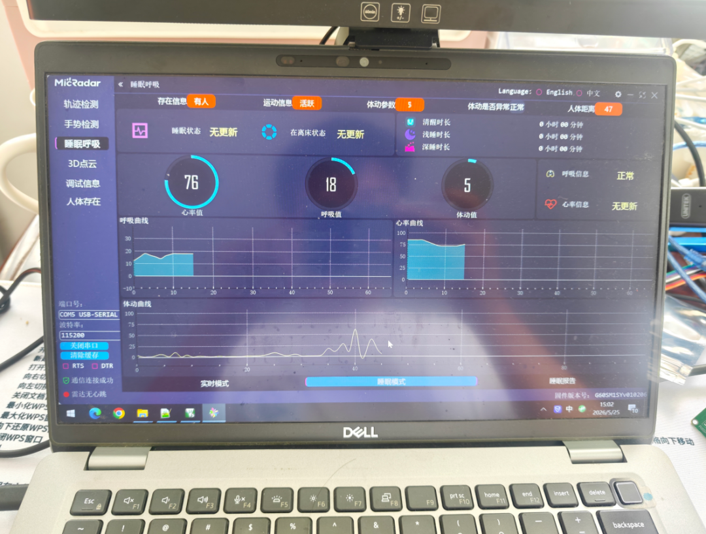
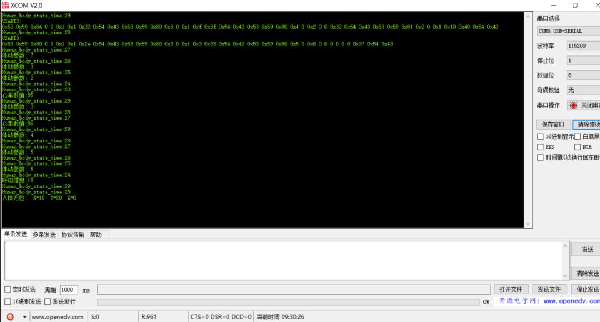
九、核心驱动代码逐段讲解
9.1 关键参数宏定义
main.c 开头把 WiFi、OneNet 服务器、MQTT 登录信息都做成宏，方便大家改成自己的：
//OneNet平台设备信息
#define MQTT_ClientID "dev1"
#define MQTT_UserName "8w7dxp3Pj8"
#define MQTT_PassWord "version=2018-10-31&res=products%2F8w7dxp3Pj8&et=1839475731&method=sha1&sign=MzmQKCY61NfQXxe3xfrOaUDNRZw%3D"
//订阅、发布主题
#define SET_TOPIC "$sys/8w7dxp3Pj8/dev1/#"
#define POST_TOPIC "$sys/8w7dxp3Pj8/dev1/dp/post/json"
//OneNet MQTT服务器
#define CONNECT_SERVER_IP "183.230.40.96"
#define CONNECT_SERVER_PORT 1883
//要连接的路由器（必须是2.4GHz，不支持5GHz）
#define CONNECT_WIFI "abc"
#define CONNECT_PASS "1126626497"全局变量里，HeartRate、People、Fall、RespiratoryRate 来自雷达，MLX90614 是体温，DHT11_T/H 是温湿度，MQ7 是一氧化碳浓度。
9.2 MLX90614红外测温（软件IIC）
MLX90614 的 IIC 地址固定为 0x5A，温度数据在 RAM 里。读物体温度（Object Temp）时，先写器件地址和寄存器地址 0x07，再重启总线读回 3 个字节（数据低字节、数据高字节、PEC校验）。温度换算公式为：
温度(℃) = Raw × 0.02 - 273.15驱动里 read_MLX90614() 返回换算好的体温。为了滤除异常跳变，代码里还做了滑动平均和越界/跳变保护（连续采多次取中位数，并对明显跳变的读数丢弃），主循环直接调用即可：
MLX90614 = read_MLX90614(); //读体温
printf("MLX90614:%.1f\r\n", MLX90614);
sprintf(tmp_buff, "%4.1f", MLX90614);
Gui_DrawFont_GBK16(80, 16*4, WHITE, 0, (u8*)tmp_buff); //显示到屏幕第5行工程里还提供了 IIC_ScanDevices() 函数，上电扫描 0~0x7F 所有 IIC 地址，有应答就打印出来，用来确认 MLX90614（地址 0x5A）有没有接好，非常适合调试。
9.3 DHT11温湿度（单总线）
DHT11 用一根数据线（PB9）通信，STM32 先发 18ms 以上的低电平起始信号，再切换为输入，DHT11 响应后依次送出 40 个 bit（湿度整数、湿度小数、温度整数、温度小数、校验和）。驱动封装成：
u8 DHT11_Read_Data(u8 *temp, u8 *humi); //返回0成功，非0失败主循环里这样用，并对异常值（>100）做保护：
if(DHT11_Read_Data(&DHT11_T, &DHT11_H))
{
printf("温度读取失败.\r\n");
}
if(DHT11_T > 100) DHT11_T = 0; //异常值清零，防止屏幕乱码
if(DHT11_H > 100) DHT11_H = 0;9.4 MQ7一氧化碳（ADC采集）
MQ7 输出模拟电压，接 PA1（ADC1 通道1）。代码先在开机时采集一个基准值 MQ7_base 做零点补偿，之后每次采集减去基准，再线性换算成 0~100 的相对浓度百分比：
MQ7_base = GetAvgAdcCHxDATA(1); //开机采基准（预热后）
//主循环里：
MQ7 = GetAvgAdcCHxDATA(1); //多次平均采集通道1
MQ7 = MQ7 - MQ7_base; //减基准
if(MQ7 < 0) MQ7 = 0;
MQ7 = (float)MQ7 / (float)3000 * 100.0; //换算成0~100%
if(MQ7 > 100) MQ7 = 100;注意：这里的"%"是相对浓度百分比（教学演示用），不是 ppm 实际浓度。要做精确 ppm 测量需要按 MQ7 的灵敏度曲线标定，本项目重点在联网和系统框架，用相对浓度做超限报警足够。
9.5 ESP8266联网（AT指令）
ESP8266 的驱动核心是 ESP8266_SendCmd()：发一条 AT 指令，然后等串口2成帧，用 strstr 在返回里找 "OK"，找到就算成功，最多重试 5 次。
STA+TCP客户端模式的连接函数 ESP8266_STA_TCP_Client_Mode() 按顺序发这些指令：
进入透传后，串口2收到什么就直接发给服务器，所以 MQTT 协议帧可以直接 USARTx_DataSend(USART2, ...) 发出去，不用再套 AT+CIPSEND。连 WiFi 时还做了判断：如果 AT+CWJAP? 查询发现已经连着目标路由器，就跳过重复连接，加快重连速度。
主程序里连 WiFi 用了个 goto AA 循环，连不上就一直重试，保证设备开机后路由器没就绪也能等到连上为止：
AA:
run_state = ESP8266_STA_TCP_Client_Mode(CONNECT_WIFI, CONNECT_PASS,
CONNECT_SERVER_IP, CONNECT_SERVER_PORT, 1);
if(run_state) //返回非0表示失败
{
printf("连接路由器失败，重试中...\r\n");
goto AA; //不断重试
}9.6 MQTT协议组帧
mqtt.c 里手动拼装 MQTT 报文。MQTT 报文第一字节高 4 位是报文类型：CONNECT=1（0x10）、PUBLISH=3（0x30）、SUBSCRIBE=8（0x82）、PINGREQ=12（0xC0）、DISCONNECT=14（0xE0）。
登录 OneNet 用 MQTT_Connect(ClientID, Username, Password)，拼 CONNECT 报文，把协议名 "MQTT"、协议版本 4（3.1.1）、Keep-Alive=100秒、ClientID、UserName、Password 依次填进去，发完等服务器回 20 02 00 00（CONNACK）表示登录成功：
if(mqtt_rxbuf[0]==parket_connetAck[0] && mqtt_rxbuf[1]==parket_connetAck[1])
{
return 0; //收到 20 02，连接成功
}订阅主题 用 MQTT_SubscribeTopic(SET_TOPIC, 0, 1)，发 SUBSCRIBE（0x82）报文，等服务器回 90 03（SUBACK）表示订阅成功。
上报数据 用 MQTT_PublishData(POST_TOPIC, json字符串, 0)，拼 PUBLISH（0x30）报文，依次是主题长度+主题字符串+消息体（就是那段 JSON）。QoS=0 时不带报文标识符，发完即走。
剩余长度（Remaining Length）用 MQTT 规定的变长编码：小于 128 用 1 字节，超过则每字节低 7 位存数据、最高位表示"后面还有字节"，代码里用 do-while 循环实现：
do
{
u8 encodedByte = DataLen % 128;
DataLen = DataLen / 128;
if(DataLen > 0) encodedByte = encodedByte | 128; //最高位置1
mqtt_txbuf[mqtt_txlen++] = encodedByte;
}while(DataLen > 0);主程序里的联网登录顺序非常清晰，重试机制也做足了：
MQTT_Init(); //先断开残留连接
for(i=0;i<5;i++) //最多试5次
{
if(MQTT_Connect(MQTT_ClientID, MQTT_UserName, MQTT_PassWord)==0)
{
esp8266_connect = 1;
break;
}
delay_ms(500);
}
if(esp8266_connect)
{
if(MQTT_SubscribeTopic(SET_TOPIC, 0, 1)) //订阅
{
printf("订阅主题失败.\r\n");
}
}十、主程序工作流程与报警逻辑
10.1 定时采集与上报
进入主循环后，time_cnt 每次循环加 1（循环末尾 delay 10ms），累计到 100（约 1 秒，但采集上报块在 time_cnt>100 时执行，配合内部 delay 实际周期约 2 秒）就做一轮完整处理：
1. 读 MLX90614 体温、DHT11 温湿度、MQ7 一氧化碳； 2. 刷新 TFT 屏对应行； 3. 判断报警条件，控制蜂鸣器； 4. 调用 CheckFall()做摔倒判断；5. 拼 JSON 数据，通过 MQTT 发布到 OneNet； 6. 翻转运行指示灯 LED1。
上报的 JSON 用 sprintf 一次拼成，字段顺序和物模型一一对应：
sprintf(tmp_buff,
"{\"id\":123,\"dp\":{"
"\"HeartRate\":[{\"v\":%d}],"
"\"DHT11_T\":[{\"v\":%d}],"
"\"DHT11_H\":[{\"v\":%d}],"
"\"MLX90614\":[{\"v\":%.1f}],"
"\"MQ7\":[{\"v\":%d}],"
"\"People\":[{\"v\":%d}],"
"\"Fall\":[{\"v\":%d}],"
"\"RespiratoryRate\":[{\"v\":%d}]}}",
HeartRate, DHT11_T, DHT11_H, MLX90614, MQ7, People, Fall, RespiratoryRate);
if(esp8266_connect)
{
MQTT_PublishData(POST_TOPIC, tmp_buff, 0); //发布到OneNet
LED2 = 0; delay_ms(100); LED2 = 1; //上传指示灯闪一下
}10.2 超限报警逻辑
报警条件是一个"或"逻辑，任意一项异常就响蜂鸣器：
//心率>110 或 体温>38℃ 或 一氧化碳>80% 或 摔倒 或 SOS按键
if(HeartRate > 110 || MLX90614 > 38 || MQ7 > 80 || Fall == 1 || Fall_SOS == 1)
{
BEEP = 1; //蜂鸣器报警
}
else
{
BEEP = 0;
}各阈值含义：
• 心率 > 110 次/分：静息状态心率过快，可能身体不适； • 体温 > 38℃：发烧； • 一氧化碳 > 80%：煤气浓度超标（相对浓度）； • Fall == 1：算法判定疑似摔倒； • Fall_SOS == 1：按下 K2 模拟的紧急求助。
按键处理：K1（PB12）解除报警（把 Fall、Fall_SOS 清零、关蜂鸣器），K2（PB13）模拟摔倒触发 SOS，方便没雷达时也能测试报警链路：
if(key == 1) //K1：解除报警
{
Fall = 0; Fall_SOS = 0; BEEP = 0;
}
else if(key == 2) //K2：模拟摔倒SOS
{
Fall = 1; Fall_SOS = 1; BEEP = 1;
}10.3 摔倒检测算法（滑动窗口方差）
雷达本身能上报运动、姿态、在床离床等状态，本工程在此基础上，又用心率和呼吸频率的时间序列做了一个生理指标突变检测，作为摔倒/突发异常的辅助判断。思路是：人摔倒或突发急病时，心率、呼吸会在短时间内剧烈波动，方差明显增大。
算法用一个结构体保存最近 10 次心率和 10 次呼吸频率，做滑动窗口：
static struct {
int heartRate[10]; //最近10次心率
int hrIndex;
int hrReady;
int respRate[10]; //最近10次呼吸
int rrIndex;
int rrReady;
int lastFallStatus; //上次摔倒状态，防重复报警
} fallDetector = {0};每次拿到新数据，存入环形数组，存满 10 个后计算均值和标准差（方差）。判定条件：心率标准差 > 15、呼吸标准差 > 4、且当前心率偏离均值超过 20%，三个条件同时满足，认为生理指标剧烈波动，判定为疑似摔倒；并用 lastFallStatus 保证一次异常只报一次，不重复响：
int CheckFall(int currentHR, int currentRR)
{
//1. 把当前心率、呼吸存入滑动窗口
fallDetector.heartRate[fallDetector.hrIndex] = currentHR;
fallDetector.hrIndex++;
if(fallDetector.hrIndex >= 10){ fallDetector.hrIndex = 0; fallDetector.hrReady = 1; }
fallDetector.respRate[fallDetector.rrIndex] = currentRR;
fallDetector.rrIndex++;
if(fallDetector.rrIndex >= 10){ fallDetector.rrIndex = 0; fallDetector.rrReady = 1; }
//数据不足10个时不判断，避免开机误报
if(!fallDetector.hrReady || !fallDetector.rrReady) return 0;
//2. 计算心率均值、标准差
int hrSum = 0;
for(int i=0;i<10;i++) hrSum += fallDetector.heartRate[i];
int hrMean = hrSum / 10;
int hrVarSum = 0;
for(int i=0;i<10;i++){
int diff = fallDetector.heartRate[i] - hrMean;
hrVarSum += diff * diff;
}
int hrStdDev = 0;
if(hrVarSum > 0){ while(hrStdDev*hrStdDev < hrVarSum/10) hrStdDev++; }
//3. 计算呼吸均值、标准差（同理，省略）
...
//4. 突变判定：波动剧烈 + 当前值偏离均值20%
int hrDeviation = abs(currentHR - hrMean);
if(hrStdDev > 15 && rrStdDev > 4 && hrDeviation > (hrMean * 0.2))
{
if(fallDetector.lastFallStatus == 0) //防重复
{
fallDetector.lastFallStatus = 1;
return 1; //判定摔倒
}
return 0;
}
else
{
fallDetector.lastFallStatus = 0;
return 0;
}
}说明：这个算法是教学层面的"生理信号突变检测"，不是医疗级摔倒判定。实际产品中摔倒检测应以雷达的姿态/高度感知为主、生理突变辅助，并加入持续时间、人工确认等机制降低误报。K1 解除报警、K2 模拟 SOS 就是为了在没有真实跌倒场景时验证报警和上云链路。
10.4 人体存在的软件处理
雷达上报心率时（0x85 帧），如果心率大于 40 就认为有人，置 People=1 并把 People_cnt 重置为 10；连续一段时间没收到有效心率，People_cnt 递减，可用于判定老人离开。屏幕"有人/无人"和云平台 People 字段都来自这个状态。
十一、调试注意事项与常见问题FAQ
11.1 调试顺序建议
强烈建议按"先模块、后联网、再整合"的顺序调试，能把问题快速定位：
1. 先跑通屏幕和传感器：只下载本地采集部分，确认 TFT 屏能显示体温、温湿度、MQ7 数值； 2. 再调雷达：用 USB转TTL 把雷达单独接电脑，串口助手 115200 打开，看是否有 0x53 0x59 开头的数据帧，确认呼吸、心率能上报，再接到 STM32 串口3； 3. 再调联网：串口1接电脑看 printf 日志，确认 ESP8266 能连上路由器（出现"WIFI GOT IP"）、MQTT 能登录（收到 20 02）、订阅成功（收到 90 03）； 4. 最后看云平台：OneNet 设备详情里看到数据点刷新，再去做可视化网页。
11.2 常见问题FAQ
Q1：雷达收不到呼吸、心率数据？
A：先确认波特率 115200、TX/RX 有没有接反（单片机 PB10 接雷达 RXD，PB11 接雷达 TXD）；再用串口助手直连雷达确认模块本身在上报；如果只收到存在/运动帧、没有心率帧，说明生命体征功能没使能，初始化时调用一次 EnableHeartbeatMonitor() 发送开启命令。
Q2：ESP8266 连不上路由器？
A：ESP8266 只支持 2.4GHz WiFi，不支持 5GHz，路由器要开 2.4G 频段；WiFi 名和密码别用中文和特殊符号；供电必须 5V 且电流够，3.3V 供电容易一连就重启。
Q3：MQTT 登录失败，收不到 20 02？
A：检查 product ID、device name、Token（password）是否和自己账号一致；Token 有过期时间（et 字段），过期要用 计算OneNet鉴权的Token.py 重新生成；确认 TCP 连接已建立（AT+CIPSTART 返回 OK）再发 MQTT 登录。
Q4：OneNet 平台看不到数据？
A：九成是物模型标识符对不上。代码 JSON 里的 key（HeartRate、DHT11_T 等）必须和平台产品里定义的数据流/属性标识符一模一样，区分大小写；发布主题必须是 $sys/产品ID/设备名/dp/post/json。
Q5：MQ7 一上电数值乱跳？
A：MQ7 是加热型半导体传感器，需要预热，开机先等几十秒；代码已用开机基准值 MQ7_base 做零点补偿，如果环境变化大可重新上电校准。
Q6：MLX90614 读出来温度是 0 或几百上千？
A：先用 IIC_ScanDevices() 看能不能扫到 0x5A 地址；检查 SDA(PA7)/SCL(PA6) 接线和软件 IIC 时序；MLX90614 供电用 5V。
Q7：蜂鸣器不响或一直响？
A：确认是有源蜂鸣器（给电平就响）；本工程用 NPN 三极管驱动，BEEP=1 响、BEEP=0 停；一直响说明某个报警条件一直满足，看串口日志是哪一项超限。
Q8：屏幕不显示或花屏？
A：TFT 是软件 SPI，检查 SCL(PB0)、SDA(PB1)、RST(PB5)、DC(PB6)、CS(PB7) 接线，VCC/BL 接 3.3V；花屏多为接触不良或时序问题，降低刷屏速度试试。
Q9：为什么要关闭 JTAG 只留 SWD？
A：PB3、PB4 默认是 JTAG 引脚，本工程引脚紧张，用 JTAG_Set(SWD_ENABLE) 关闭 JTAG 释放这两个脚，下载调试改用 SWD（SWDIO/SWCLK）两根线即可。
Q10：数据多久上报一次？会不会太频繁？
A：本工程约 2 秒采集上报一次，教学演示实时性好。实际长期部署建议改成 10~30 秒一次，降低功耗和平台消息量（OneNet 对消息频率有一定限制）。